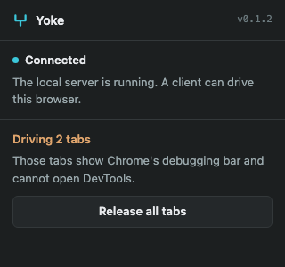

Yoke gives any MCP client controlled access to your real browser. Your sessions, your cookies, your open tabs. Nothing to log into twice.
No managed subset and no guessing at coordinates. Read a page, get named references, act on them.
Clicks and keystrokes a page cannot tell from yours, and screenshots of tabs in the background.
The toolbar panel says whether the local server is answering, and which tabs are being driven.
npm install -g yoke-mcp
yoke install
